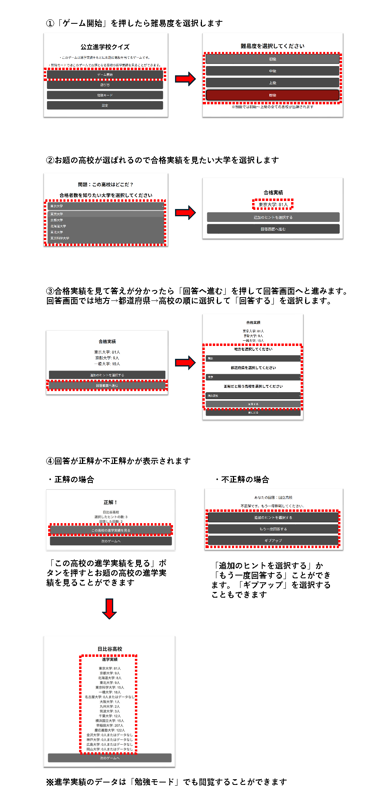

・このゲームは進学実績をもとにお題の高校を当てるゲームです。
・勉強モードではお題となる高校の進学実績を閲覧することができます。
※このゲームは2025年のデータを使用しています。
※厨級では初級～上級の全ての高校が出題されます
不正解です。もう一度挑戦してください。
このゲームは進学実績をもとにお題の高校を当てるゲームです。
・不正解の場合は、追加のヒントを選択するか、もう一度回答するか、ギブアップすることができます。
・正解またはギブアップした場合、お題の高校の進学実績を見ることができます。
以下は実際のプレイ画面の例です（お題が日比谷高校の場合）：
※勉強モードではこのゲームでお題となる高校の進学実績を見ることができます
問い合わせ、不具合や間違いの報告、ご意見等はこちらのGoogle Formの方へお願いします。いただきました回答はアプリの不具合・間違いの修正、今後のアプリの改善、新機能追加、新アプリの開発に役立たせていただきます。
お問い合わせFormはこちら※個々の対応はしかねる場合がございますのでご了承ください。